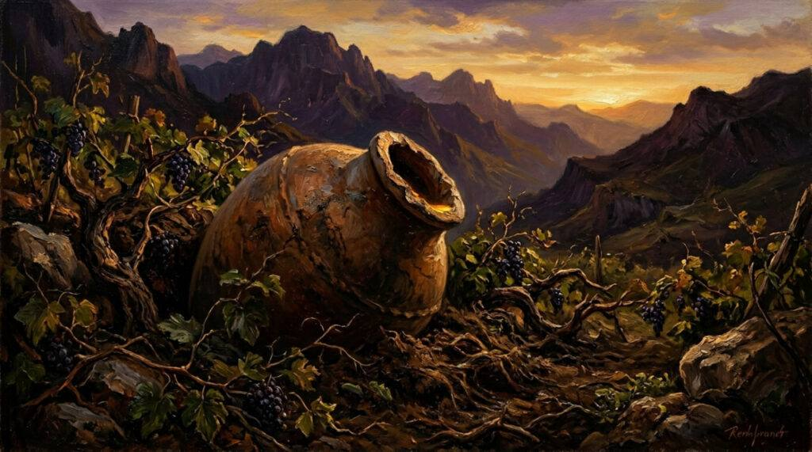
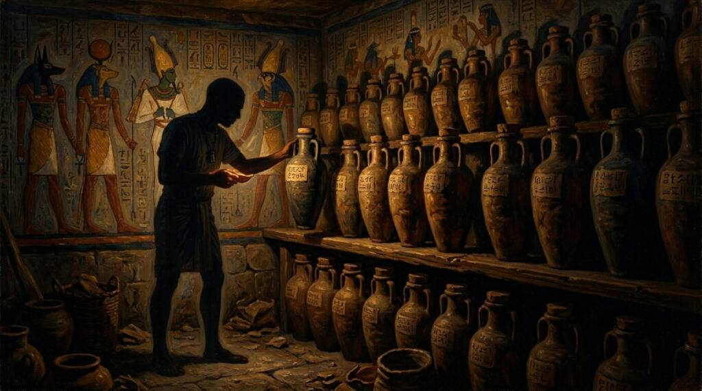
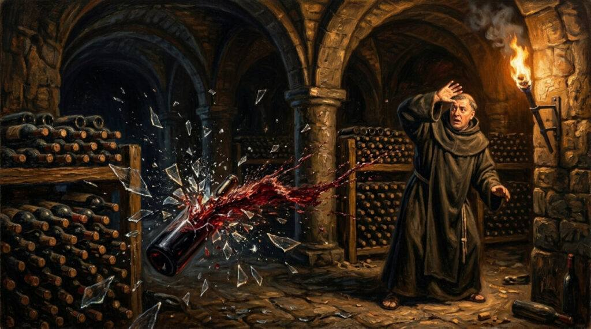
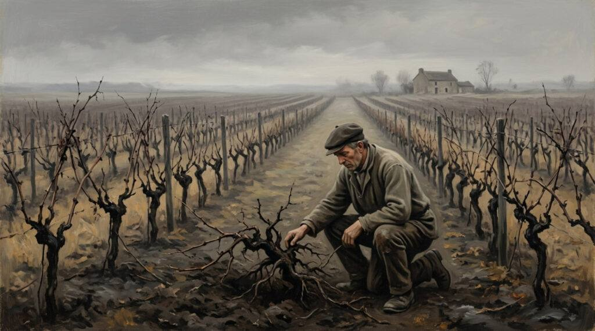
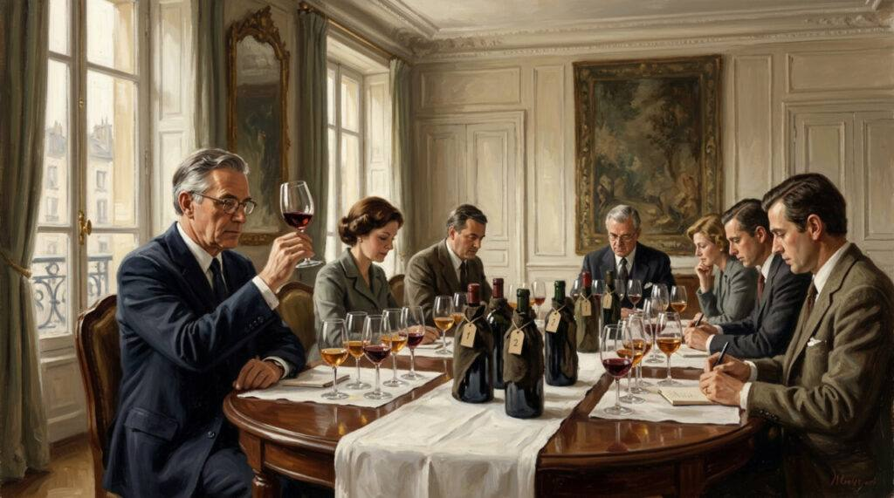

For eight thousand years, humans have been fermenting grapes, building religions around the results, nearly losing everything to a tiny insect, and arguing about who makes it best. Here is the full story.

Somewhere in the South Caucasus mountains, around 6,000 BC, a clay jar of grape juice was left in the ground and forgotten.
Days passed. The wild yeast floating in the warm air drifted down and found the sugars. Fermentation began. Bubbles rose slowly in the dark. When someone finally opened that jar — weeks later, maybe more — the liquid inside had changed into something new. Something that gave warmth and a kind of lightness that ordinary grape juice never could.
Nobody called it wine yet. Nobody understood what had happened. But they tasted it again. And then they buried more jars.
That is how it started. Not with a king’s command or a scholar’s design, but with an accident and a second sip.
Key Takeaways
- The oldest confirmed wine residue in the world comes from clay jars buried in Georgia, South Caucasus, dating to around 6,000–5,800 BC — confirmed by a 2017 PNAS study using molecular archaeology.
- Tutankhamun was buried with 26 individually labeled wine jars — each recording the vintage year, the estate, the winemaker’s name, and the quality grade. Ancient Egyptians invented the wine label.
- The phylloxera crisis (1863–1890) reduced French wine production by over 70%, from 84.5 million to 23.4 million hectoliters in just 14 years.
- Dom Pérignon did not invent Champagne — he spent his career trying to prevent bubbles. The famous “tasting stars” quote was invented for a 19th-century print advertisement.
- Every European vine today is grafted onto American rootstock. The French grapevine, technically, no longer exists in its pre-phylloxera form.
- The 1976 Judgment of Paris was intended as a publicity stunt. Only one journalist showed up, the French press ignored it, and Spurrier was banned from the French wine tour for a year. The winning bottles are now in the Smithsonian.
- Global wine production in 2024 hit its lowest level since 1961, driven by climate volatility and generational shifts in drinking habits.
Wine Through Time
Eight moments, one jar — from a forgotten accident in Georgia to the glass in your hand.
The Forgotten Jar
In the mountains of Georgia, grape juice is left in a buried clay jar. It ferments. Wine begins by accident.

The First Wine Labels
Egyptian cellars record the vineyard, the year, and the winemaker on each jar — wine labels are born.
Rome Plants the Vine
Roman settlers plant vineyards from Bordeaux to the Rhine. Wine travels with the legions.
The Monks Keep It Alive
After Rome falls, monks shelter the vine. Cistercian brothers in Burgundy perfect the art of matching grape to ground.

The Monk and the Myth
Dom Pérignon, cellar master at Hautvillers, improves Champagne. The story that he 'invented' it comes much later.

The Insect That Nearly Won
Phylloxera, a tiny American aphid, destroys 40% of France's vineyards. American roots save European wine.

The Judgment of Paris
In a blind tasting in Paris, California wines beat France's best. The wine world never recovers — it grows.
The Jar Is Still There
Production falls to its lowest since 1961 as the climate shifts. Eight thousand years on, the story continues.
The Night Someone Forgot a Jar: Wine’s Accidental Beginning
The oldest confirmed wine in the world was not found in a cellar or a palace. It was found in a field in Georgia.
In 2017, a team of archaeologists led by Dr. Patrick McGovern of the University of Pennsylvania published findings that changed our understanding of wine’s origin. Chemical analysis of pottery fragments from two Neolithic sites south of Tbilisi — Gadachrili Gora and Shulaveris Gora — revealed tartaric acid, malic acid, and other unmistakable markers of fermented grape wine. The pottery dated to approximately 6,000–5,800 BC (see Source #1).
To put that in perspective: this wine predates the construction of Stonehenge by more than 2,000 years. It predates the first Egyptian pyramid by 3,000 years. It is older than the wheel.
The jars themselves are remarkable. They are large — some holding the equivalent of a modern bathtub — and belonged to a culture called the Shulaveri-Shomutepe. They were among the earliest pottery objects made in the Near East. And the evidence suggests they served a triple purpose: fermentation vessel, aging container, and serving jug. One jar, one process, start to finish.
What’s striking here is the continuity. Georgia today has more than 500 documented local grape varieties — far more than any other country of its size — which is precisely what you would expect from 8,000 years of cultivation and selection. And in 2013, UNESCO added the traditional Georgian winemaking method using Kvevri clay jars to its Intangible Cultural Heritage list. The same large clay jars. The same earth-burying technique. Eight thousand years later.
The first wine was an accident. The tradition it created is anything but.
The Pharaoh’s Vintage: How Egypt Invented the Wine Label
Wine reached Egypt and found something entirely new to become: sacred.
The Egyptians did not treat wine as an everyday drink. Common people drank beer, brewed from barley — reliable, cheap, nutritious, and plentiful along the Nile. Wine was for the court, the priests, and the gods. The god Osiris, lord of life and death, was said to have taught humans to grow grapes. Wine was his gift — a bridge between the living and the dead.
And so, when a pharaoh died, his wine went with him.
Tutankhamun was buried with 26 wine jars, each one individually labeled in hieratic script. The labels recorded the vintage year, the estate of production, the name of the chief winemaker, and the quality of the wine — on a scale ranging from “genuine” to “good” to “very good.” These are, without dispute, the oldest wine labels in the world (see Source #2).
One label, examined by researchers and now catalogued at the Egyptian Museum in Cairo, reads: “Year 5. Wine of the Estate-of-Aton of the Western River. Chief vintner Pinehas.” A wine journalist could have written it today.
The detail most historians overlook is that Egyptians apparently had a strong view on vintage years. Analysis of Tutankhamun’s cellar suggests that only wines from specific, preferred harvests were chosen for burial — implying that someone in 14th-century BC Egypt was keeping records of which years produced exceptional fruit. The concept of the “great vintage” is 3,300 years old.
Researchers who opened some of these jars in the 20th century found traces of wine — not the liquid itself, which had long evaporated, but chemical residues absorbed into the clay. The jars had outlasted the pharaoh, outlasted his kingdom, outlasted the language in which his vintner signed his name.
There is a quiet irony in the fact that the most sophisticated wine documentation system in the ancient world was designed entirely for someone who would never drink the wine.
Rome’s Greatest Export Was Not Power — It Was the Vine
The Roman Empire gave the Western world its roads, its legal codes, its architectural vocabulary, and its calendar. It also gave Europe its vineyards. Of these legacies, the last one may be the most enduring.
Roman legions marching into Gaul, Hispania, and the Rhineland carried two things they considered non-negotiable: their military discipline and their wine supply. But Roman commanders understood something that went beyond logistics. Wine was a tool of cultural assimilation. To share wine with a conquered people was to begin the slow process of making them Roman.
Bordeaux. Burgundy. Champagne. The Moselle Valley. These names define European wine culture today. Roman soldiers planted the first vines in all of them. In the 1st century AD, what is now the Bordeaux region — then called Burdigala — was planted by Roman settlers who recognized the river valleys and maritime climate as ideal for the grape. Pliny the Elder wrote admiringly of wines from what is now the Rhône Valley. The vines were not native. They were planted by an empire.
Emperor Domitian (51–96 AD) tried to put limits on this expansion, issuing an edict forbidding the planting of new vineyards in the provinces. His concern was commercial: Italian wine was losing market share to provincial competitors. It was, historians note, probably the first trade protection law in wine history. It was also completely ineffective. Vine planting in Gaul and Iberia continued regardless, overseen by local landowners who had discovered that good wine could be worth more than grain.
When Rome fell in the 5th century, those vineyards did not fall with it. The vines outlasted the empire.
The Men in Brown Robes Who Kept Wine Alive
The centuries after Rome’s collapse are routinely called the Dark Ages. For European viticulture, they nearly were.
Without the Roman demand for wine, without the Roman road network to move it, and without the Roman administrative structure to organize its production, large-scale winemaking contracted. In northern Europe especially, vineyards were abandoned, workers scattered, and the knowledge of careful viticulture — soil selection, vine training, harvest timing — began to fade.
What saved it was a cup of wine drunk at an altar every morning.
The Benedictine monks required wine for the Eucharist, the central act of Christian worship. Without wine, there could be no Mass. Without the Mass, the church ceased to function. This was not theology — it was operational necessity. And so, in monasteries from Burgundy to the Rhine, monks planted vines wherever they could, even in cold, marginal, northerly climates where no one had thought grapes could grow.
What they discovered was that necessity is an extraordinary teacher.
Forced to grow grapes in difficult conditions, Benedictine monks became the first systematic viticulturalists in European history. They kept records — something that most secular farmers of the era never bothered to do. They mapped which hillsides caught the most sun, which soils drained best, which grape varieties survived the coldest winters. They identified, for example, the distinctive properties of the Côte de Nuits in Burgundy — the specific slopes, soils, and microclimates that would eventually become the world’s most valuable wine land.
The concept of terroir — the idea that a specific place gives wine its character — was essentially invented in monastic cellars. By the 12th century, the Cistercian monks of Clos de Vougeot in Burgundy were producing wine so renowned that they sent it as diplomatic gifts to the Pope in Rome. The world’s wine culture had been quietly rebuilt, behind stone walls, by men who never signed their names.
Dom Pérignon Did Not Invent Champagne. And the True Story Is Far Better.
The most famous story in wine history is also, in important ways, not true.
The legend runs like this: a blind monk named Dom Pérignon, working in his cellar at the Abbey of Hautvillers in the 1660s, accidentally created sparkling wine and exclaimed, “Come quickly, I am tasting the stars!” The world was transformed. Champagne was born.
Almost none of this happened.
Dom Pierre Pérignon (1638–1715) was indeed a real monk and genuinely influential cellar master at Hautvillers. But he was not blind (that myth arose from his practice of “blind tasting” grape samples to identify vineyard sources). He did not invent sparkling wine — he spent much of his career trying to prevent secondary fermentation in the bottle, which caused dangerous pressure buildups and routine explosions. The Champagne region in winter was cold enough to stop fermentation mid-process; when spring warmed the cellar, dormant yeasts woke up inside sealed bottles, creating carbon dioxide that shattered glass and destroyed entire years’ production.
Pérignon saw this as a problem to be solved, not a gift to be celebrated (see Source #5).
The “tasting stars” quote appeared in a print advertisement in the late 19th century — approximately 175 years after Pérignon’s death. The story of him “inventing” Champagne was largely the invention of a later abbot, Dom Groussard, who in 1821 wrote a romanticized account of his predecessor in order to generate prestige for the church. Then, in 1936, Moët & Chandon launched a prestige cuvée under the name “Dom Pérignon” — using the 1921 vintage — and the marketing mythology became permanently embedded in popular culture.
What Pérignon actually did was also significant: he refined the blending of grapes from multiple vineyards, advocated for stronger “English glass” bottles (made from coal-fired furnaces rather than wood-fired ones), reintroduced cork as a superior seal, and developed pressing techniques that extracted clear white juice from dark-skinned Pinot Noir grapes. These were genuine innovations that set the foundation for what others would build into Champagne.
The true story is that bubbles in wine were being intentionally produced — and enjoyed — in England before France, by scientists using stronger bottles. The Frenchman who eventually mastered the process of controlled secondary fermentation was not a monk at all: it was a widowed businesswoman, Widow Clicquot (Barbe-Nicole Ponsardin), who in the early 1800s developed the riddling technique that produced the clear, stable sparkling wine we recognize as Champagne today.
History rarely lets a clean story stay clean.
The Tiny Insect That Nearly Erased European Wine Forever
In 1863, grape farmers in the southern Rhône Valley noticed something wrong. Their vines were dying — not from cold, not from drought, not from disease that anyone recognized. The leaves yellowed. The wood blackened. The fruit shriveled. And then the vine died.
Nobody knew why. It was not until 1868 that a commission of experts identified the cause: a tiny aphid-like insect called Phylloxera vastatrix, native to the eastern United States, had arrived in Europe on imported American plant stock. In North America, it was nearly harmless — American vines had evolved alongside it over thousands of years and developed resistance. European vines had never encountered it. Their roots had no defense.
The insect spread slowly but inexorably. It attacked vine roots underground — invisible, silent, lethal. By 1890, phylloxera had destroyed approximately 40% of France’s vineyards, roughly 2.5 million hectares. French wine production collapsed from 84.5 million hectoliters in 1875 to just 23.4 million in 1889 — a fall of more than 70% in fourteen years (see Source #3). Whole families who had made wine for ten generations lost everything. Desperate growers tried flooding their fields, injecting carbon bisulfide into the soil, burying toads under each vine to “draw out the poison.” Nothing worked.
At this point, wine represented roughly one-sixth of all French agricultural income. The economic damage was catastrophic.
The solution, when it came, was profoundly counterintuitive. American vines were the source of the problem — and American vines turned out to be the only solution. Researchers discovered that if you grafted a French vine onto American rootstock, the American roots resisted phylloxera while the French vine on top continued to produce European-quality fruit. It was a biological chimera: a French body on American legs.
By the early 1890s, the grafting program was underway. The vineyards came back. But they were not the same vineyards.
Every European vine planted since that era — every Bordeaux, every Burgundy, every Barolo, every Champagne — grows on American roots. The pre-phylloxera European vine is, strictly speaking, extinct. The wines that survived are the wines of a hybrid civilization, built from disaster. If you find this either troubling or poetic, you are not alone.
The Afternoon That Changed the Wine World Forever
On May 24, 1976, a British wine merchant named Steven Spurrier organized a modest tasting at the InterContinental Hotel in Paris. It was meant to be a promotional event for his Parisian wine shop. He had invited many journalists. Only one showed up: George Taber of Time magazine, who was attending Spurrier’s wine school as a student.
The format was simple. Nine French judges — sommeliers, winemakers, editors — would taste twenty wines in two blind flights: Chardonnays versus white Burgundies, California Cabernets versus top Bordeaux. The judges were told the wines were from both sides of the Atlantic, but not which was which. Their scores would determine a ranking.
Spurrier had organized it as a publicity stunt to showcase California wines to a skeptical Paris market. He expected France to win. So did every judge in the room.
The results landed like a stone in a still pool.
In the white flight, the top-scoring wine was the 1973 Chateau Montelena Chardonnay from Napa Valley, made by winemaker Mike Grgich, a Croatian immigrant who had learned his craft in Europe. In the reds, first place went to the 1973 Stag’s Leap Wine Cellars Cabernet Sauvignon, made by Warren Winiarski, a former University of Chicago political science instructor who had left academia to plant vines in Napa (see Source #4).
The French judges, upon learning the results, were horrified. Some asked for their scores back. The French press mostly refused to cover the story. Spurrier was banned from the French national wine tour for a year as informal punishment. France’s reaction to losing was, perhaps, the most revealing part of the story.
Taber’s account ran in Time on July 7, 1976 — four paragraphs, buried on page 58 next to an advertisement for Armstrong Tires, under no byline. It coined the phrase “Judgment of Paris.” The bottles of Chateau Montelena Chardonnay and Stag’s Leap Cabernet that won that day are now in the collection of the Smithsonian’s National Museum of American History.
The 2006 thirty-year re-tasting, conducted simultaneously in London and Napa, confirmed that California wines had not only beaten France in 1976 but had aged beautifully. California came first again.
What We Still Don’t Know: The Open Questions of Wine History
Wine is 8,000 years old. It has been the subject of continuous human attention for the entirety of that time. And yet historians are still arguing about some of its most fundamental questions.
Was there wine before Georgia? Some archaeologists point to possible wine residue in jars from the Zagros Mountains of Iran, dated to approximately 7,000 BC — which would predate the Georgian finds. The evidence there is thinner, and the chemistry less conclusive, but the debate continues. Patrick McGovern, whose team confirmed the Georgian finds, himself previously identified wine evidence in Iran. The “oldest wine” title may shift again.
Did monasteries truly preserve viticultural knowledge, or is that a romantic exaggeration? Medieval historians have noted that secular estates — including Roman-legacy farms in Gaul — also continued some wine production through the dark centuries. The monastic origin story is partly accurate, partly the result of monks being better record-keepers than farmers.
What exactly does resveratrol do? Red wine contains a polyphenol called resveratrol, which has been linked in studies to cardiovascular protection, the “French Paradox” (lower heart disease rates in France despite high-fat diets), and potential anti-aging effects. But the science is genuinely contested. A 2022 review in IJERPH analyzed 3,344 publications on resveratrol and concluded that while “moderate red wine consumption seems to bear the potential of being health-promoting, limited data in humans preclude drawing unambiguous conclusions.” The Mayo Clinic recommends not starting to drink wine for health reasons. The evidence is interesting. The certainty is not there yet.
Is the classic wine world in permanent decline? Global wine consumption fell from 237 million hectoliters in 2019 to 214 million in 2024 — a 10% drop in five years. Production in 2024 hit 225.8 million hectoliters, the lowest since 1961. Climate change is disrupting traditional growing regions while opening new ones. Generations born after 1990 are drinking significantly less alcohol than their parents. The beverage that survived phylloxera, two World Wars, Prohibition, and centuries of religious prohibition may face a more formidable adversary: changing taste.
The evidence is thin on what wine culture looks like in 2074. Which is, in its own way, what makes the next chapter interesting.
What a Glass of Wine Teaches Us
Five quiet lessons from an 8,000-year-old accident.
- Great things can begin by accident. Wine itself was one — grape juice forgotten in a jar. Pay attention to happy accidents.
- Patience is an ingredient. Good wine cannot be hurried. Some things only improve when we give them time.
- Check the famous story. Dom Pérignon did not invent Champagne — the legend was marketing. Even beloved stories deserve a second look.
- Small things can topple giants. An insect too small to fear destroyed 40% of France's vineyards. Size is not power.
- Quality can come from anywhere. In 1976, unknown California wines beat France's best. Judge the work, not the name.
Frequently Asked Questions About the History of Wine
Where did wine originally come from?
Wine originated in the South Caucasus region, in what is now the country of Georgia. Chemical analysis of pottery fragments from two Neolithic sites south of Tbilisi — Gadachrili Gora and Shulaveris Gora — confirmed fermented grape wine residue dating to approximately 6,000–5,800 BC. This finding, published in the Proceedings of the National Academy of Sciences in 2017, represents the oldest biomolecular evidence of wine in the world. The Georgian tradition of wine in large clay jars (Kvevri) has continued unbroken to this day and was recognized by UNESCO as Intangible Cultural Heritage in 2013.
Who actually invented Champagne?
This is one of wine history’s most durable myths. Dom Pierre Pérignon (1638–1715), the Benedictine monk most associated with Champagne, did not invent sparkling wine. In fact, he spent his career trying to prevent the secondary fermentation that creates bubbles, because it caused dangerous bottle explosions. The famous quote attributed to him — “Come quickly, I am tasting the stars!” — appears to have been invented for a 19th-century advertising campaign, nearly 175 years after his death. The techniques that made modern Champagne viable were developed in the 18th and 19th centuries, including controlled secondary fermentation and the riddling method pioneered by Barbe-Nicole Ponsardin (Widow Clicquot) in the early 1800s.
Why did the phylloxera crisis nearly destroy European wine?
Phylloxera vastatrix is a tiny insect native to North America that feeds on the roots of grapevines. American vines had evolved alongside phylloxera for thousands of years and developed resistance. When the insect arrived in Europe (likely via infected American plant samples imported in the late 1850s), European vines had no defense. The insect worked underground, killing roots invisible to farmers. Between 1863 and 1890, it destroyed approximately 40% of France’s vineyards and caused French wine production to fall by more than 70%. The solution — grafting European vines onto phylloxera-resistant American rootstock — saved the industry, but meant that no European vine has grown on its own roots since. Every classic European wine today comes from a plant that is, genetically, a hybrid.
What was the Judgment of Paris and why does it matter?
The Judgment of Paris was a blind wine tasting held on May 24, 1976, at the InterContinental Hotel in Paris, organized by British wine merchant Steven Spurrier. Nine French judges tasted California wines against top French Bordeaux and Burgundy without knowing which was which. California won both the red and white categories — the 1973 Chateau Montelena Chardonnay and the 1973 Stag’s Leap Wine Cellars Cabernet Sauvignon took first place. The result shocked the wine world, ended France’s uncontested reputation as the sole source of great wine, and opened the global market to wines from California, Australia, Chile, South Africa, and elsewhere. The winning bottles are now on display at the Smithsonian Institution.
Is wine actually good for your health?
The scientific consensus is more nuanced than popular coverage suggests. Red wine contains resveratrol and other polyphenols associated with antioxidant and cardiovascular effects, and studies from France have linked moderate wine consumption to lower rates of heart disease (the “French Paradox”). However, the Mayo Clinic and most current research caution that the evidence does not justify starting to drink wine for health purposes. A 2022 bibliometric review in the International Journal of Environmental Research and Public Health, covering over 3,300 publications, concluded that while moderate consumption “seems to bear the potential of being health-promoting,” human data remains inconclusive. The alcohol in wine also carries real risks with heavier consumption.
Why is wine losing popularity in younger generations?
Global wine consumption has declined steadily since 2019, falling from 237 million to 214 million hectoliters by 2024. Researchers and industry analysts point to several overlapping causes: health consciousness and broader “sober-curious” movements among Millennials and Gen Z; the rising cost of wine due to climate disruption and inflation; the expansion of alternative beverages including craft spirits, hard seltzers, and non-alcoholic drinks; and cultural shifts in how young consumers relate to alcohol. The OIV (International Organisation of Vine and Wine) has noted that the decline in volume is partly offset by growth in premium segments — people are drinking less but spending more per bottle.
What is terroir and when did the concept begin?
Terroir is the idea that the specific combination of soil, climate, topography, and local environment of a vineyard gives wine its unique character — that a Burgundy wine tastes like Burgundy not just because of the grape variety but because of where those grapes grew. The concept was first systematically explored by Cistercian monks in the 12th century, who mapped the Burgundy hillsides with extraordinary precision, identifying which small plots consistently produced the best fruit. The monks of Clos de Vougeot, for example, famously divided their vineyard into sections based on observed quality differences — a mapping project that shaped Burgundy’s appellation system to this day.
The most enduring things are rarely the ones that were planned.
The Jar Is Still There
There is a strange comfort in the arc of this story.
Wine began as an accident in a forgotten jar. It became a gift from the gods. It traveled with conquering armies and sheltered in monastic cellars. It survived a crisis no one saw coming, built on roots borrowed from the continent it almost destroyed. It was blindly judged on a spring afternoon in Paris and found to be, against all expectations, equal to its oldest and most celebrated rivals.
Eight thousand years of this. And the jar is still there — replicated now in every vineyard, every cellar, every bottle that carries the specific taste of a specific hillside in a specific year.
What the history of wine teaches us — not with words, but with time — is that the most enduring things are rarely the ones that were planned. The forgotten jar. The exploding bottle that became Champagne. The unwanted American roots that saved European wine. The blind tasting that nobody expected to matter.
The next chapter of wine is already being written in new regions and new climates — in English hills that were once too cold, in Chinese valleys that nobody planted a century ago, in vineyards that do not yet exist. The story has never been about a single place or a single tradition. It has always been about the human willingness to taste something again.
Take a breath. Pour a glass. The story continues.
Words to Take With You
vine
nounThe climbing plant that produces grapes.
Romans carried the vine to every corner of their empire.
vineyard
nounA field where grapes are grown for wine.
Phylloxera destroyed 40% of France's vineyards.
vintage
nounThe wine of one particular year; also that year's grape harvest.
Tutankhamun's cellar kept wines from specific, preferred vintages.
ferment
verbTo slowly turn into alcohol as yeast works on sugar.
Forgotten grape juice began to ferment in the buried jar.
cellar
nounA cool room under a building where wine is stored.
Monks guarded wine in stone cellars through the Dark Ages.
barrel
nounA round wooden container for storing wine.
Wine slept in barrels while empires rose and fell.
myth
nounA famous story that many believe but that is not fully true.
The story of Dom Pérignon 'inventing' Champagne is mostly a myth.
crisis
nounA dangerous time when big decisions must be made.
The phylloxera crisis cut French wine production by 70%.
Sources and Further Reading
We told this story using the sources below. If you would like to read more, these are good places to begin.
- PNAS — McGovern et al. (2017): early Neolithic wine of Georgia, ~8,000 years ago
- Uppsala University — wine jar labels from Tutankhamun's tomb (thesis record)
- Economic History Society — France's 19th-century wine crisis and its impact on crime
- UC Davis Library — 'A Tale of Two Tastings': the 1976 Judgment of Paris
- VinePair — 15 things you should know about Dom Pérignon: the monk vs. the myth
- OIV — State of the World Vine and Wine Sector in 2024
- PubMed Central — resveratrol, red wine's famous compound: a double-edged sword
- National Geographic — oldest evidence of winemaking, found in Georgia
- UNESCO — Georgia's ancient qvevri winemaking method (2013 inscription)
- Ridge Vineyards — the Judgment of Paris, 50th anniversary
A Note from HitoCast
This article was researched and written by the HitoCast editorial team. We cross-checked facts across 10 sources, including peer-reviewed PNAS research on Georgian wine origins, UNESCO heritage documentation, economic history research on the phylloxera crisis (MIT/NBER), and primary source accounts of the 1976 Judgment of Paris from UC Davis Library archives. The Dom Pérignon myth section draws on multiple independent historical analyses. If you spot an error or have a source to recommend, please email us — we update articles regularly.